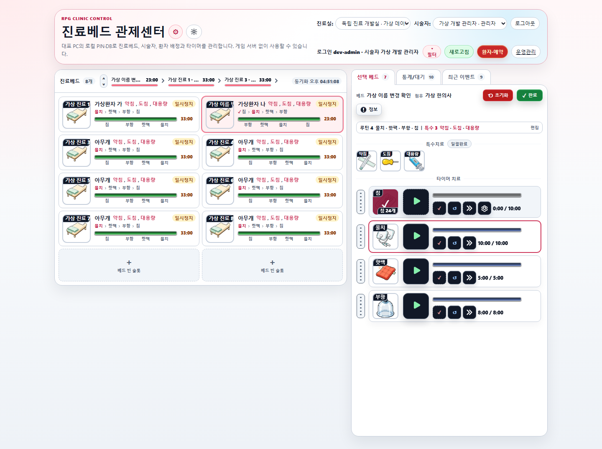

다운로드하고 설치
위에서 Windows 설치 파일을 받으세요. 파일을 실행하고 설치 안내를 따릅니다. 필요하면 바탕 화면 바로가기를 선택하세요.
업데이트할 때는 실행 중인 시험판 앱을 먼저 종료하세요.
의맥전기 · LOCAL CLINIC TIMER
WINDOWS · 진료실 타이머 시험판베드마다 흐르는 치료의 시간,
우리 진료실 PC 한 대에서 편하게 관리하세요.
게임을 하지 않아도, 코딩을 몰라도 괜찮습니다.
기본 베드 8개 · 게임 없이 사용 · 별도 개발 도구 설치 없이
TIME TO HEAL 의맥전기의 치유를, 진료실로.

의맥전기 인트로의 한의원 풍경 · 소개용 일러스트
01 / DOWNLOAD
PC 한 대에 설치하고 시작하세요.
매일 필요한 기능에 집중한 Windows 시험판입니다.
현재 배포본은 코드 서명이 없는 시험용입니다.
사용할 PC에서 설치와 첫 실행을 먼저 확인해 주세요.
Mac·32비트 Windows 설치본은 제공하지 않습니다.
WINDOWS · REPRESENTATIVE PC
설치 파일을 확인하고 있습니다…
02 / GET STARTED
한 대에서 쓰는 기본 설정부터 시작하세요.
직원 PC·게임 연결은 필요할 때 추가합니다.
위에서 Windows 설치 파일을 받으세요. 파일을 실행하고 설치 안내를 따릅니다. 필요하면 바탕 화면 바로가기를 선택하세요.
업데이트할 때는 실행 중인 시험판 앱을 먼저 종료하세요.
진료실 이름과 관리자 ID·PIN을 정합니다. 기본 백업 폴더를 확인하고, 백업 복구 암호를 안전한 곳에 따로 보관한 뒤 설정을 저장하세요.
PIN은 로그인할 때, 복구 암호는 백업을 복구할 때 씁니다.
설정을 저장하면 서버가 준비됩니다. 왼쪽 상태 표시등과 시작 확인 완료를 확인하고 진료 화면 열기를 누르세요.
빨간 표시등이면 홈에서 오류 안내를 확인하고 다시 시작하세요.
처음에는 진료실 인증서 등록 안내를 확인하고 동의합니다. 열린 화면에서 앞서 정한 로컬 관리자 ID와 PIN으로 로그인하세요.
Windows 확인을 마쳐야 합니다. 취소·실패하면 아래 도움말을 확인하세요.
03 / EVERYDAY USE
앱 실행 → 초록 표시등 → 진료 화면 열기.
사용하는 동안 서버 앱을 켜 두세요.
왼쪽에서 베드를 선택하면 오른쪽에 치료 항목이 나타납니다. 물치·핫팩·부항·침의 시간과 순서를 확인하고 시작 버튼을 누르세요. 필요할 때 일시정지·재개·완료할 수 있습니다.
상단 바에는 진행 중인 베드와, 치료를 진행한 뒤 일시정지·시술대기 중인 베드가 나타납니다. 아직 시작하지 않은 베드는 목록에서 확인하세요. 기본 테마는 밝은 화면이며 다크 모드도 켤 수 있습니다.
서버 앱 홈의 치료 기록 CSV 내보내기를 누르고 관리자 ID·PIN으로 로그인합니다. 날짜를 정해 CSV를 받으면 Excel에서 열 수 있습니다. 한 번에 최대 366일·2,000건이며 초과하면 기간을 나누세요.
04 / DATA & BACKUP
시험판의 데이터와 PIN·백업은 개발판과 별도입니다.
두 버전 사이에 자동 공유하거나 이전하지 않습니다.
%LOCALAPPDATA%\PvpLocalClinicTrial\server기본 백업 폴더는 이 위치 아래의 backups입니다.
서버 앱의 백업 · 데이터에서 실제 저장 위치와 백업 상태를 확인하세요.
https://127.0.0.1:8766/clinic서버 앱을 종료하면 진료 서버도 종료됩니다. 다른 직원이 사용 중인지 확인한 뒤 닫아 주세요.
05 / HELP
네. 기본 8개 베드의 진료 타이머는 게임 실행이나 게임 계정 연결 없이 사용합니다. 처음 설치 파일을 받으려면 인터넷이 필요하지만 기본 진료는 로컬에서 실행됩니다. 9개 이상 베드 확장은 별도 온라인 승인 절차가 필요합니다.
현재 시험판은 코드 서명이 없습니다. 설치 파일의 출처와 표시된 버전·해시를 담당자와 확인하세요. 보안 설정이나 병원 관리 정책에 따라 설치가 제한될 수 있습니다. 제한된다면 PC 관리 담당자에게 문의하세요. 해시 확인은 코드 서명을 대신하지 않습니다.
설치 파일 정보 확인 ↑서버 앱에서 진료 화면 열기를 눌러 인증서 신뢰 등록 안내를 확인하세요. 동의 후 Windows 확인까지 끝나야 합니다. 계속 실패하면 홈의 브라우저 연결 안내를 확인하고 비밀 값을 제외한 오류 문구를 담당자에게 전달하세요. 인증서나 데이터를 임의로 지우지 마세요.
대표 PC 한 대의 서버를 함께 사용해야 합니다. 대표 PC 앱의 직원 · 게임 연결에서 직원 PC 연결을 설정하고 각 직원 PC의 인증서 신뢰와 내부망 연결을 확인하세요. 127.0.0.1은 현재 컴퓨터 자신이므로 직원 PC에는 대표 PC의 내부망 주소를 사용합니다. 직원 PC마다 새 서버를 만들면 데이터가 나뉩니다.
기존 설정을 저장할 때 PIN과 복구 암호를 바꾸지 않으려면 해당 입력란을 빈칸으로 두세요. 빈칸은 기존 값 유지입니다. 진료 화면에 로그인할 때는 기존 ID·PIN을 사용합니다. 업데이트 전 백업을 만들고 같은 시험판 앱을 정상 종료한 후 설치하세요.
파일 정보 확인이 끝날 때까지 기다려 주세요. 실패 안내가 나오면 파일 상태 다시 확인을 누르세요. 파일이 없거나 검증되지 않은 경우 다운로드를 중단합니다. 계속 실패하면 페이지 관리자에게 문의하세요. 자동으로 반복 다운로드하지 않습니다.
시험판을 사용하기 전 중요한 데이터는 별도로 백업해 주세요.